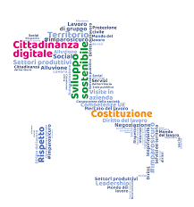

Introduzione:
Ciao!
Ho deciso di fare questo sito di educazione civica, perché secondo me l’educazione civica è fondamentale, per conoscere diritti e doveri di ogni cittadino.
Quindi studiarla è importante, per smettere di credere a tutte quelle fake news che spesso leggiamo sui social.
L’obiettivo di questa materia è quello di fornire agli studenti gli strumenti per conoscere i propri diritti e doveri.
Di formare cittadini responsabili e attivi che partecipino pienamente e con consapevolezza alla vita civica, culturale e sociale della loro comunità.
Fornendo le basi per utilizzare consapevolmente e responsabilmente i nuovi mezzi di comunicazione e gli strumenti digitali.
Questo sito sarà strutturato in diverse parti, in ciascuna di esse parlerò di un argomento diverso, per cambiare argomento, l'utente dovrà cliccare su uno dei link presenti nell'indice, a seconda dell'argomento cui è interessato.
Gli argomenti presenti nel sito, saranno i sequenti: educazione civica, cittadinanza digitale, speech sull'arbitraggio, la migrazione, Magna Carta, la Resistenza, sviluppo sostenibile, e PCTO.
Buona lettura!
